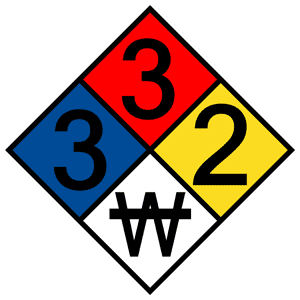

You are probably familar with Sodium, and that isn't suprising, considering that the element comprises approximately 2.6% of Earth's crust, making it the most abundant element on Earth. However, it is extremely reactive, and almost never discovered in it's elemental form. In 1807, it was isolated by Sir Humphry Davy for the 1st time, and has since been used in the production of several materials and common chemicals, including titanium, sodium peroxide, and sodium hydride. You are most likely familar with sodium chloride, or table salt, and sodium bicarbonate, or baking soda.
|  | Hazard | Color | Value | Description |
|---|---|---|---|---|
| Health | |
3 | Can cause serious or permanent injury. | |
| Flammability | |
3 | Can be ignited under almost all ambient temperature conditions. | |
| Instability | |
2 | Readily undergoes violent chemical changes at elevated temperatures and pressures. | |
| Special | |
W | Reacts violently or explosively with water. |
For more information on NFPA diamonds, click here.